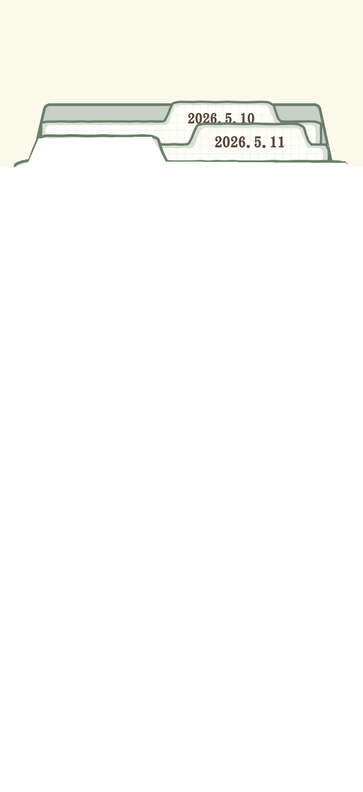
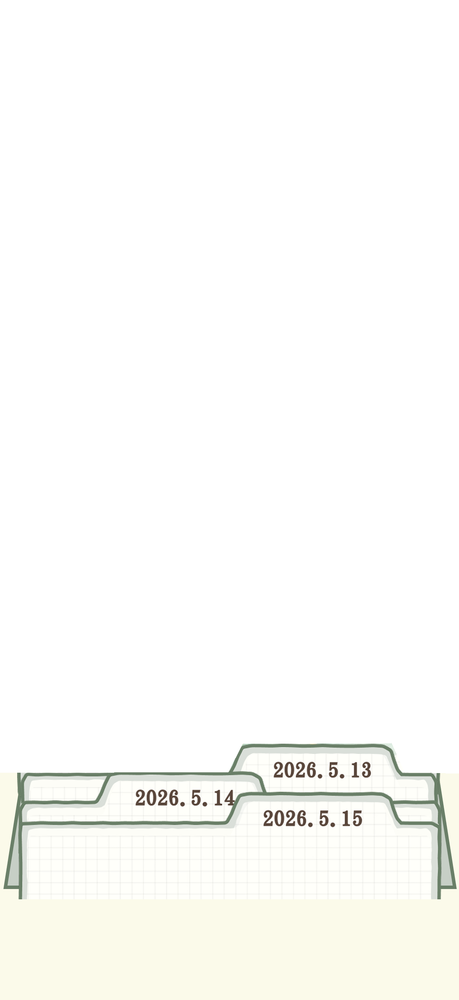
點擊檔案日期查看
我的日記
左右滑動翻看每一天
 要結束今天的探索嗎？
要結束今天的探索嗎？


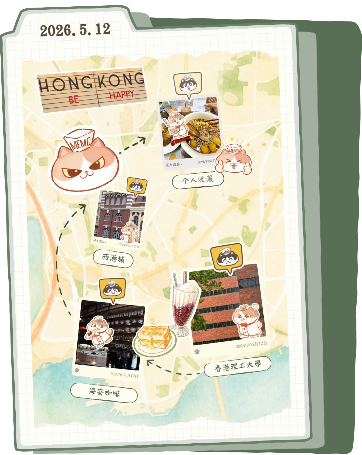


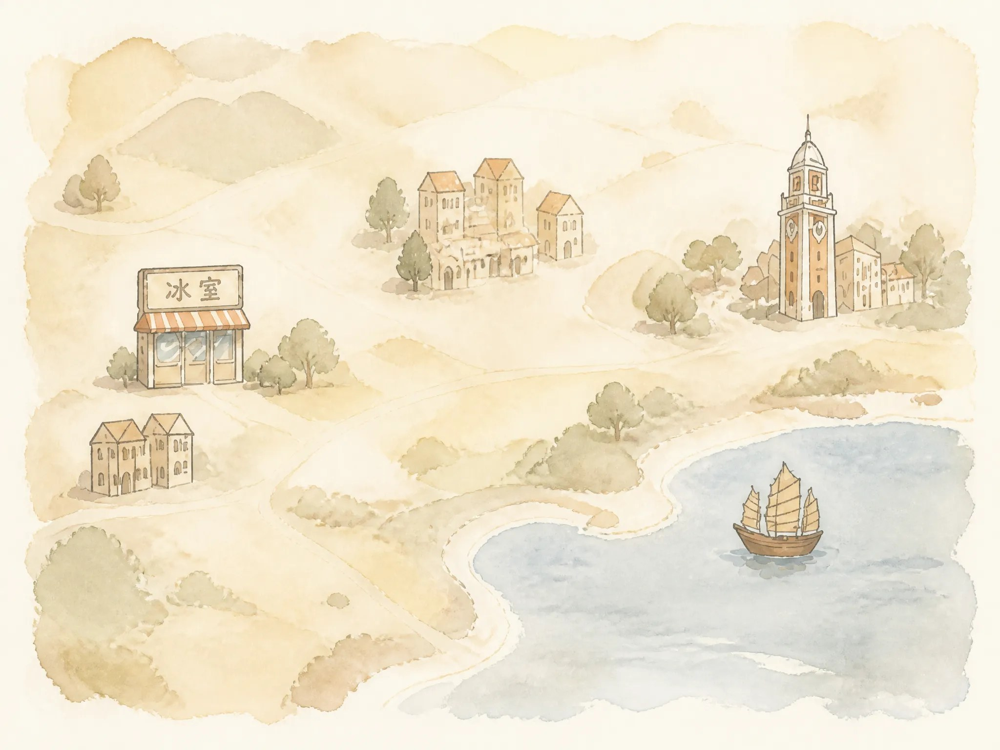
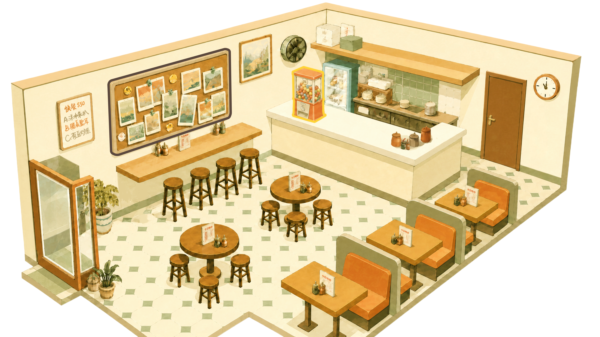
Lucky
▼
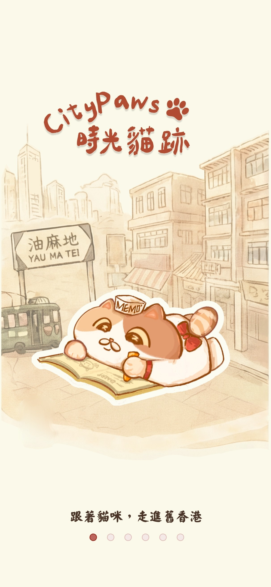
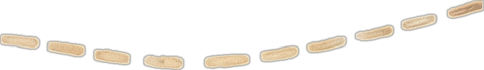
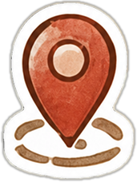


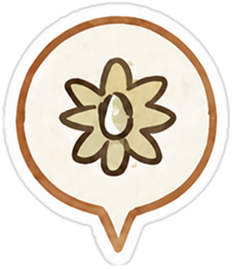
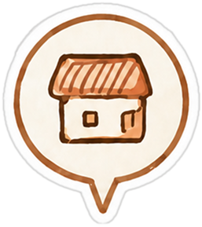
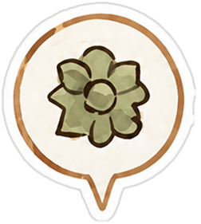

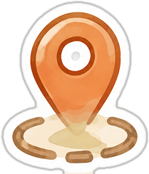


點一下開始探索 🐾
點一下開始逛逛 🐾
☆
 0
0
0
0
Piatti tipici di Hong Kong


 🔒
🔒


永恆的記憶廚師帽・紅領結・湯匙
Caricamento...
👆 點一下扭蛋機，扭一顆！
 --
--
--
--


你是第6位到達這裡的人類！


時光貓跡 🐾


＋
找不到這個表情 🐾

Flip your card to check…

🔓 官方錨點 ·
恭喜解鎖！
那時候，這裡還叫香港工業專門學院。本喵每天陪人類溫書，偷偷等菠蘿油投餵。悄悄吃一口就趕緊坐好，今天也有認真旁聽！


傳世
菠蘿油
“菠蘿喺邊度？根本就冇。”
個名只係因為表面層金黃鬆化嘅裂紋，睇落似菠蘿外皮。舊時香港物資唔係時時都充足，所以慣咗用最簡單嘅食材，整出睇落更豐富嘅美食。菠蘿包貴乎唔係內餡，而係人心賦予嘅意義。
收集於 紅磡 香港理工大學點擊卡片翻面 ↻
已保存到“稍後探索”！
稍後探索